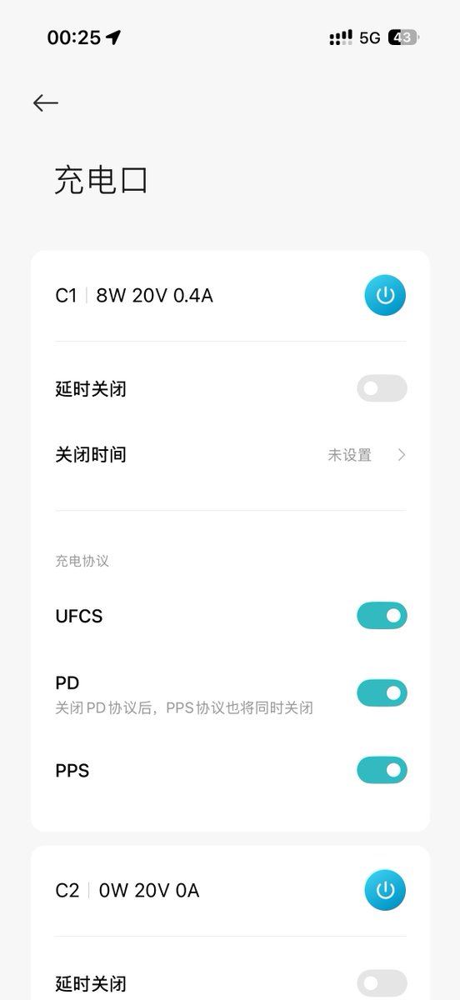
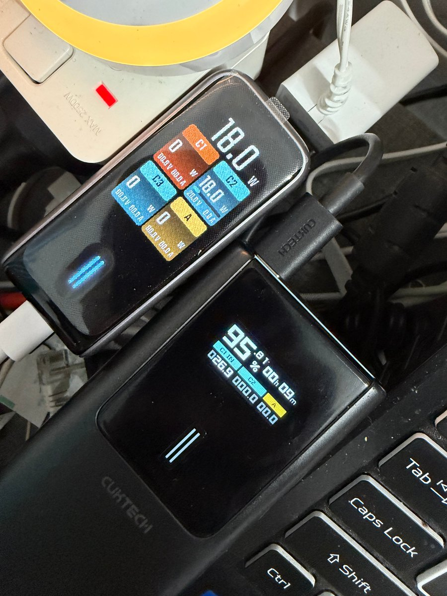
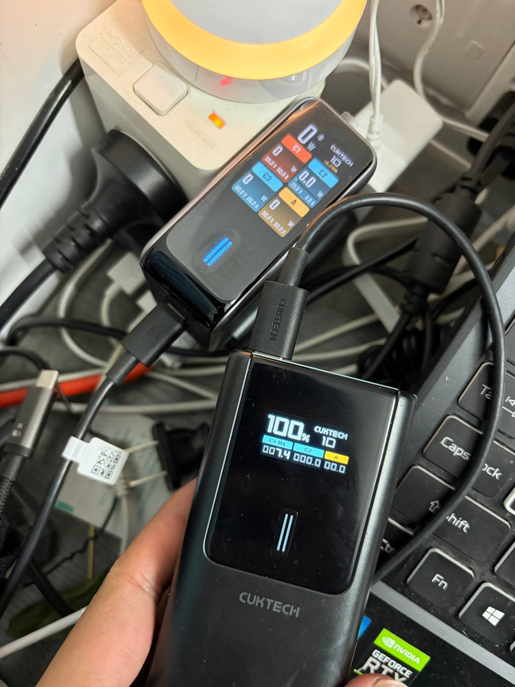
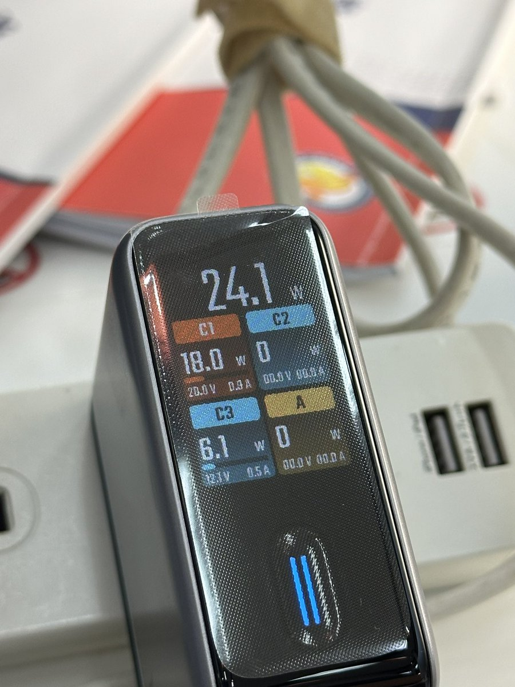
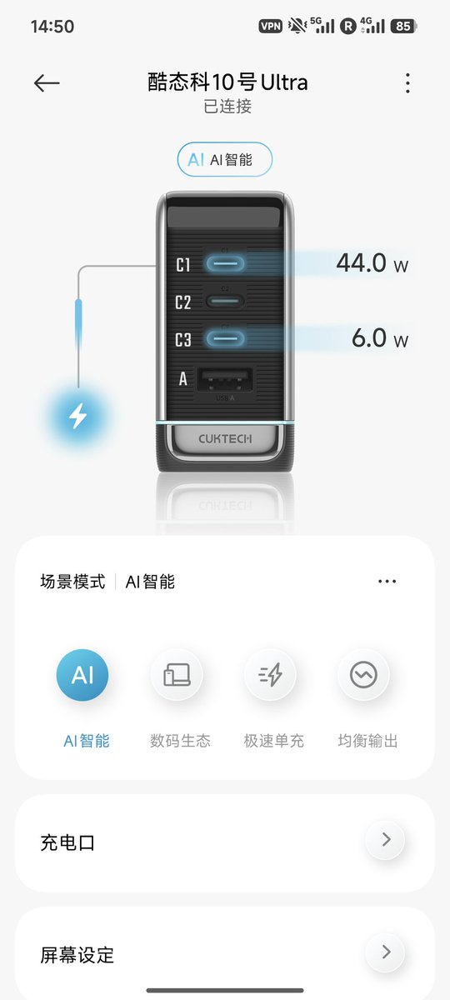

看了罗老师的推荐，入手了酷态科充电头。理论上这个头能当永动机了，实测输出功率居然比充电宝的输入功率还大，低于7-8W时显示0W
总之酷态科的显示工具看个乐就好了，毕竟一个小小的充电头又不是专业计量工具，那确实是我要求太高了

总之酷态科的显示工具看个乐就好了，毕竟一个小小的充电头又不是专业计量工具，那确实是我要求太高了





不到￥140 ，120W 快充，3个TypeC/1个 TypeA，带屏幕和触摸控制，实时显示每个充电口功率，蓝牙连接米家，支持 app 控制。大家就说中国这些硬件厂商有多卷吧。回去我研究下看能不能接入 homeassistant，再搞个桌面 widget 控制。😊 https://t.co/9FNpZuaZJs